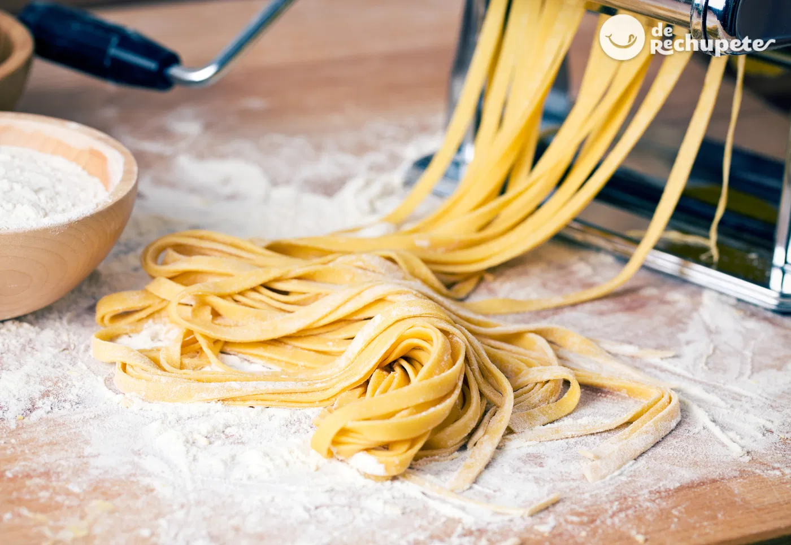

Fideos Caseros

Descripción
Receta de Cocineros Argentinos para preparar fideo caseros al puro huevo
Ingredientes
- Harina 0000: 500 grs
- Huevos: 5 unidades
- Aceite de oliva: 2 cucharadas
- Sal: 1 cucharada
Pasos
- Colocar la harina y la sal en un bol
- Mezclar y hacer un agujero en el centro
- agregar los huevo y el aceite
- Unir todo y luego bajar a la mesa
- amasar por varios minutos hasta obtener una masa lisa
- Descansar por 30 minuto tapada
- separar en 2 0 4 partes para estirar en la pastalinda
- Pasar por lo rodillos desde el N°9 hasta el N°1 (harinar entre pasadas)
- Ajustar el corte deseado, cortar la masa y colgar en un palo harinado
- Calentar abundante agua hasta romper hervor y agregar lo fideos
- Sacar luego de 8/10 minutos y servir
Menu Principal